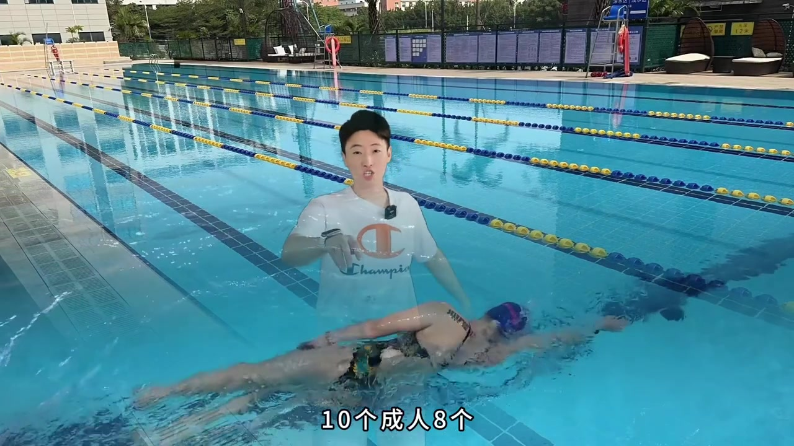
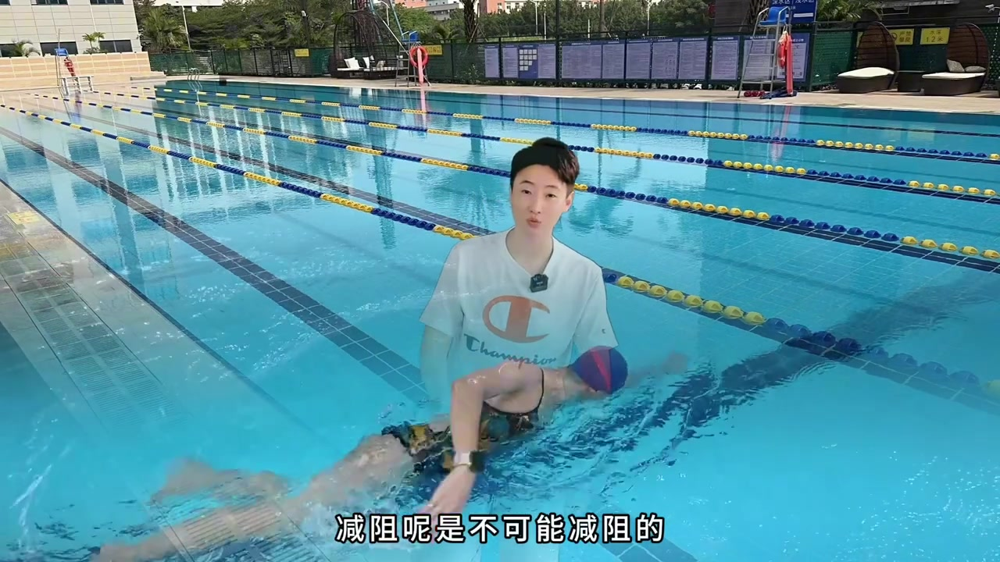
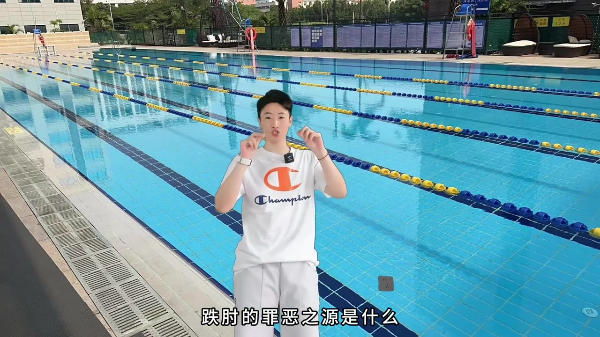
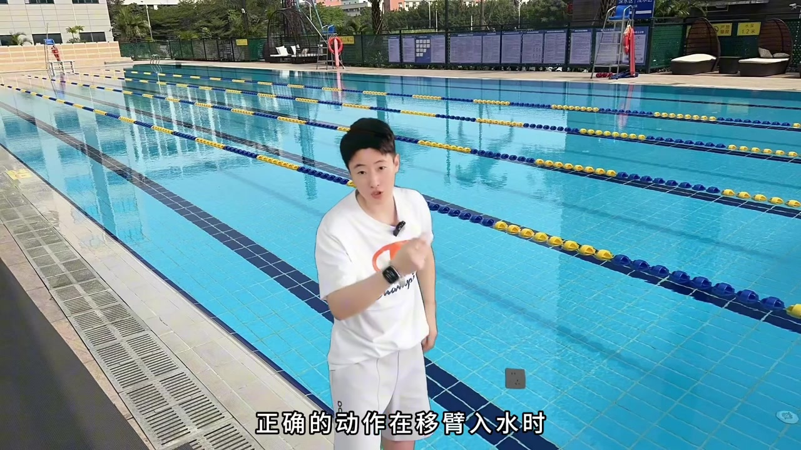
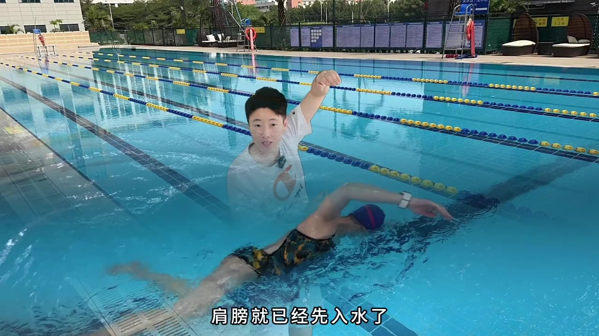
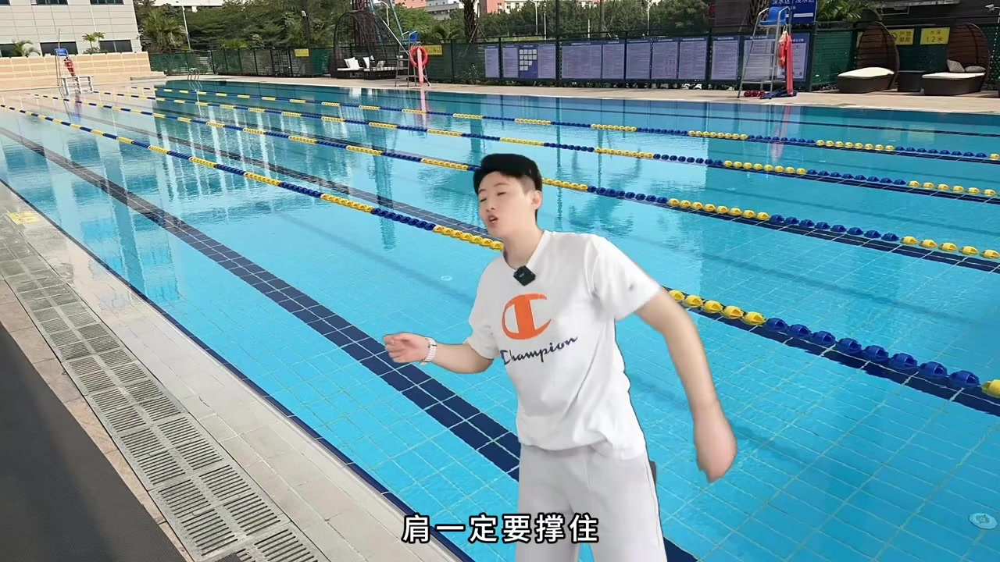
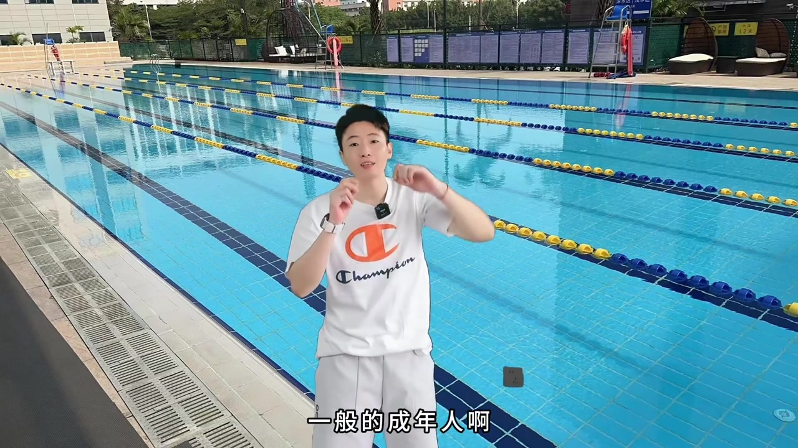
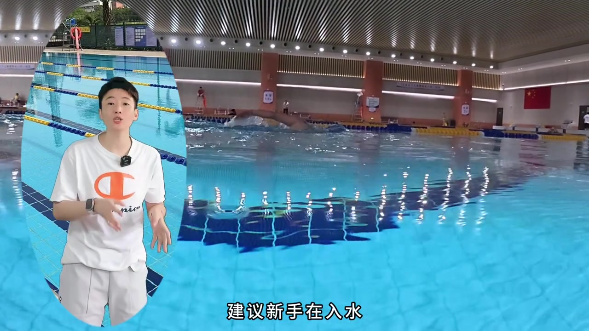

开场：自由泳跌肘，十个成人八个中招
镜头叠在泳池移臂画面上，教练半透明出镜。字幕直接点题「自由泳的跌肘」：成人里十个有八个肘陷入水；有时自己都能听到每次入水「啪啪」的溅水声。他接着说，减阻是不可能的——还会把后面的前伸拖成沉肘，高肘抱水基本就此告别。
画面字幕：「自由泳的跌肘」「减阻呢是不可能减阻的」
说明：Whisper 把「自由泳的跌肘」识成「自由勇的跌走」、把「减阻」识成「减组」、把「前伸」识成「前身」。下文叙述结合画面字幕校正；完整转录区仍保留 Whisper 原始分段。

学员立刻接话：「不行，教练，我要改改跌肘。」整段纠错从这里正式开课。

提问：跌肘的罪恶之源是什么？
教练站在池边举手提问：跌肘的罪恶之源是什么？答案不是手，而是「掉肩」——很多人肘先掉下去，根源其实是肩先掉了下去。他故意加一句「没想到吧」，把注意力从肘部表象拉回肩带。
「跌肘的罪恶之源是什么？是掉肩。」

正确移臂：肩先撑在水面上，顺序是手、肘、肩
正确动作里，一臂（移臂）入水时肩膀应仍在水面上；手先入水，再随着前伸，肩膀才跟着转下去。顺序被拆成三个字：手 → 肘 → 肩。跌肘的人则反过来——手还没入水，肩膀已经先掉进水里；肩入水后大臂跟着入，肘也就自然先砸进水。
「正确的动作，在移臂入水时，肩膀都是在水面上的……顺序是：手、肘、肩。」


小结原话落到一点：根源就是一臂入水过程中「肩膀掉了」。手还没粘水时，肩膀都应在水上撑着，不能提早往下掉；随前伸依次是手入水、肘入水，最后才是肩入水。
关键等式：肩撑住了，就等于肘撑住了
教练把动作口诀收成一条可检查的等式：在移臂入水过程中，肩一定要撑住——肩撑住就等于肘撑住。反过来，肩掉就等于肘掉。现场用手势把「撑」和「掉」对比给看。
「肩撑住了就等于肘撑住了。」

第二因素：平插入水还是斜插入水
除了掉肩，还有入水手姿。他问：手入水是斜插还是平插？肩膀柔韧性一般的成年人若用平插入水，就很容易跌肘——柔软性不够时肩撑不住。因此他更建议成人爱好者采用斜插入水：手掌手腕稍微向外侧转一点，肘就更容易撑起来。
「我会更建议成人游泳爱好者，采用斜插入水……手掌手腕稍微向外侧转一点，你的肘就撑起来了。」

他对比两种后果：不去撑、硬平插，肘极容易往下掉；斜插时手和手腕向外侧打开，肘也跟着向外撑住，就不那么容易跌肘。画面字幕同步打出「就不那么容易跌肘了」。
收束两招：肩撑住 + 斜插入水
总结只留两件事：第一，入水时肩不要往下掉、要撑住——肩撑住等于肘撑住，肩掉等于肘掉；第二，建议新手用斜插入水，手稍微向外侧倾斜，更容易把肘架住；平插更容易让肘掉下来。
「想要不跌肘，首先入水时肩要不往下掉、撑住……第二个点，建议新手采用斜插的方式去入水。」

片尾他用「两个细节跟住跌肘完结」「找根纠错落地练」收场，并邀请加入泳培帮线上训练营。整条视频把标题里的连锁——入水跌肘导致前伸沉肘、再导致抱水溜肘——落成可当场检查的肩位与入水角度。